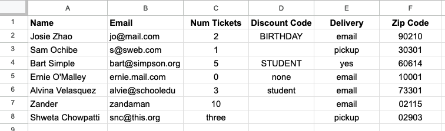
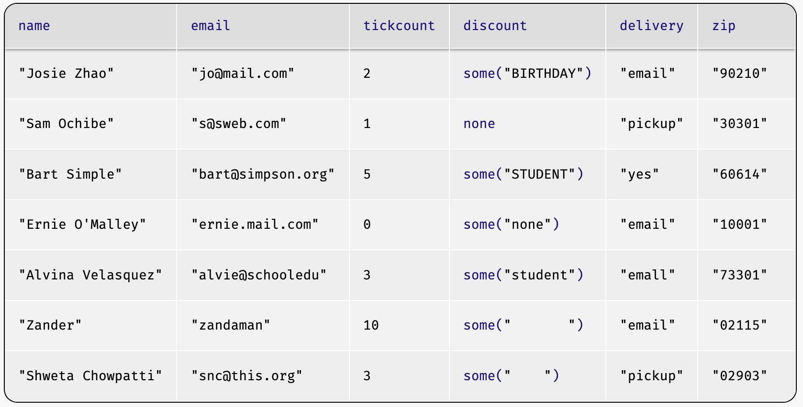
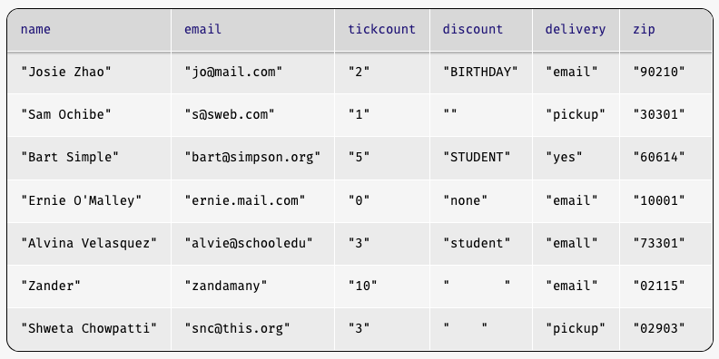
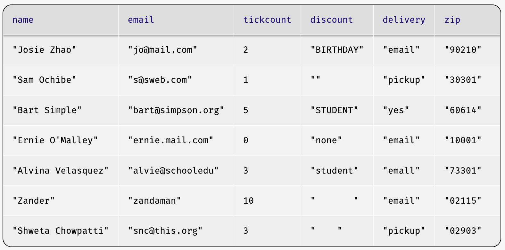
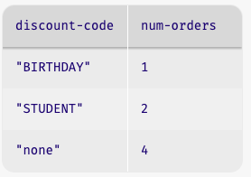
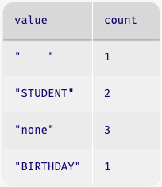
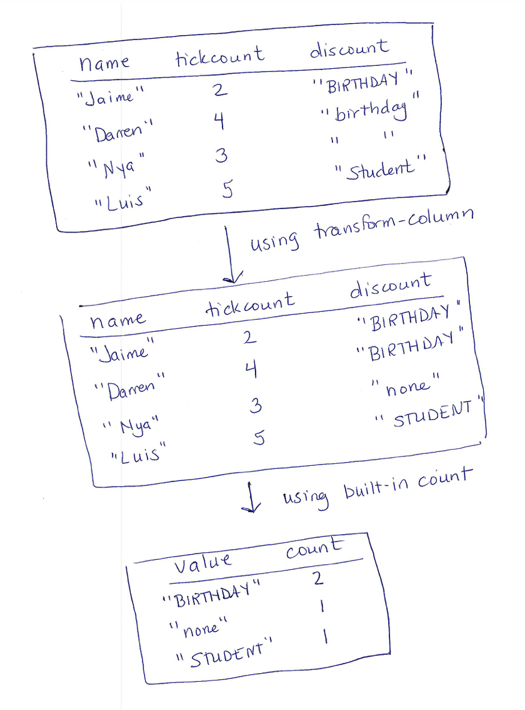
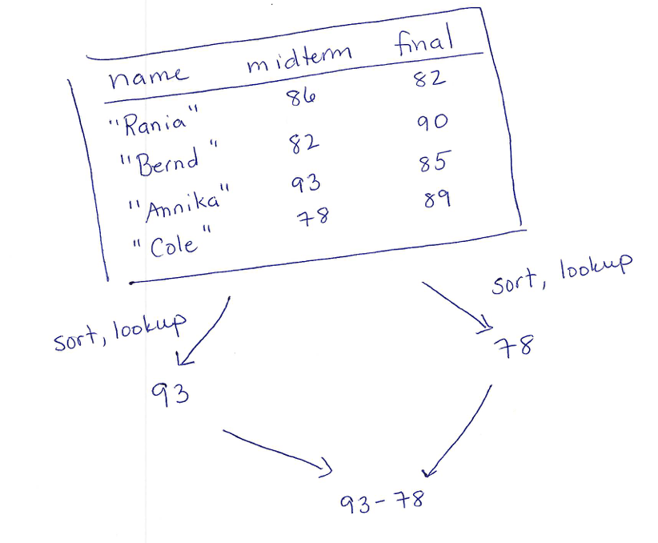
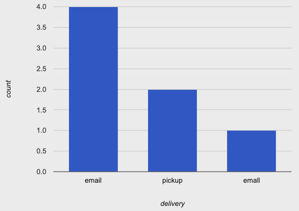

4.2 Processing Tables
In data analysis, we often work with large datasets, some of which were collected by someone else. Datasets don’t necessarily come in a form that we can work with. We might need the raw data pulled apart or condensed to coarser granularity. Some data might be missing or entered incorrectly. On top of that, we have to plan for long-term maintenance of our datasets or analysis programs. Finally, we typically want to use visualizations to either communicate our data or to check for issues with our data.
As a concrete example, assume that you are doing data analysis and support for a company that manages ticket sales for events. People purchase tickets through an online form. The form software creates a spreadsheet with all the entered data, which is what you have to work with. Here’s a screenshot of a sample spreadsheet:

Do Now!
Take a look at the table. What do you notice that might affect using the data in an analysis? Or for the operations for managing an event?
Some issues jump out quickly: the three in the
"Num Tickets" column, differences in capitalization in the
"Discount Code" column, and the use of each of "none" and
blank spaces in the the "Discount Code" column (you may have
spotted additional issues). Before we do any analysis with this
dataset, we need to clean it up so that our analysis will be
reliable. In addition, sometimes our dataset is clean, but it needs to be
adjusted or prepared to fit the questions we want to ask. This chapter
looks at both steps, and the programming techniques that are helpful
for them.
4.2.1 Cleaning Data Tables
4.2.1.1 Loading Data Tables
The first step to working with an outside data source is to load it into your programming and analysis environment. Which source you use depends on the programming environment that you are using for Pyret:
If you are using CPO, you can load tables from Google Sheets (if you want to load a CSV, you first need to import it into Google Sheets)
If you are using VSCode, you can load tables directly from CSV files
Both use the same Pyret operation (load-table), but in slightly
different ways.
Google Sheets and CSV files treat the types of data in cells
differently, so there are also differences in how we manage the types
of Pyret columns after loading. Columns like "Num Tickets" that
appear to contain both numbers and strings highlight the
differences. We discuss these nuances in separate sections for each
kind of source file.
4.2.1.1.1 Loading Tables from Google Sheets in CPO
include gdrive-sheets
ssid = "1Ks4ll5_8wyYK1zyXMm_21KORhagSMZ59dcr7i3qY6T4"
event-data =
load-table: name, email, tickcount, discount, delivery, zip
source: load-spreadsheet(ssid).sheet-by-name("Orig Data", true)
endssidis the identifier of the Google Sheet we want to load (the identifier is the long sequence of letters and numbers in the Google Sheet URL).The sequence of names following
load-tableis used for the column headers in the Pyret version of the table. These do NOT have to match the names used in the original Sheet.sourcetells Pyret which sheet to load. Theload-spreadsheetoperation takes the Google Sheet identifier (here,ssid), as well as the name of the individual worksheet (or tab) as named within the Google Sheet (here,"Orig Data"). The final boolean indicates whether there is a header row in the table (truemeans there is a header row).
When reading a table from Google Sheets, Pyret treats each column as
having a type, based on the value in the first row of data. Pyret thus
reports an error that three (in the "Num Tickets"
column) is not a number. We’ll discuss how to handle this in
Dealing with Columns
with Multiple Types of Data.
4.2.1.1.2 Loading Tables from CSV files in VSCode
We configure the load-table operation differently depending on
whether the CSV file is on your computer or available through a URL.
Load from a CSV file via URL:
include csv # the url for the file url = "https://raw.githubusercontent.com/data-centric-computing/dcic-public/main/materials/datasets/events-orig-f25.csv" event-data = load-table: name, email, tickcount, discount, delivery, zip source: csv-table-url(url, default-options) endurlis the identifier of the web address (URL) where the CSV data we want to load exists.sourcetells Pyret where to load the data from. Thecsv-table-urloperation takes the web address (here,url), as well as options (which indicate, for example, whether we expect there to be a header row).The sequence of names following
load-tableis used for the column headers in the Pyret version of the table. These do NOT have to match the names used in the first row of the CSV file (which is usually a header row).
Load from a CSV file on your computer:
include csv # the filesystem path to your CSV file on your computer path = "datasets/events-orig-f25.csv" event-data = load-table: name, email, tickcount, discount, delivery, zip source: csv-table-file(path, default-options) end
When reading a table from CSV, Pyret treats every cell as containing
a string, even if the cell data appears to be numeric. Thus, Pyret
does not report an error around the combination of three and
numbers in the "Num Tickets" column. The inconsistency would
resurface, however, if we try to use the column data assuming that
they are all strings of numerals. If we notice this problem before
loading our data, we should fix it before we proceed.
4.2.1.1.3 Dealing with Columns with Multiple Types of Data
Well-formed data should not mix types of data within a single column. In some situations, we might be able to write small programs to correct these inconsistencies. For example, a program could help us remove data that are inconsistent with the expected column type. However, such an approach should only be used after careful study of the data to make sure we aren’t throwing out useful information that was simply entered incorrectly.
Due to the need for care in dealing with such issues, we instead recommend fixing this sort of error in the source file before loading the data into Pyret (or any other programming or analysis tool).
How to manage revisions like this is itself an interesting data-management problem. You might have received the data from another tool, or imported it from another sheet that contained the error. Someone else might provide updates to the data that you need to track as well. If you got the data from someone else, it often makes sense for you to make a copy of the source data and clean up the copy so you still have access to the original if needed.
The source data files for this lesson also contain clean versions to use in the rest of this chapter.
If you are using the Google Sheet, look for the separate worksheet/tab named
"Data"in which thethreehas been replaced with a number. If we use"Data"instead of"Orig Data"in the aboveload-spreadsheetcommand, the event table loads into Pyret.If you are using the CSV files in VSCode, modify the file path to end with
"events-f25.csv"instead of"events-orig-f25.csv".
4.2.1.2 Dealing with Missing Entries
When we create tables manually in Pyret, we have to provide a value for each cell – there’s no way to "skip" a cell. When we create tables in a spreadsheet program (such as Excel, Google Sheets, or something similar), it is possible to leave cells completely empty. What happens when we load a table with empty cells into Pyret?
The original data file has blanks in the discount
column. After we load it into Pyret, we see something
interesting in that column (though what it is will differ depending on
whether you’re reading from Google Sheets or CSV files).
If you are using Google Sheets and CPO, load the table as follows:
event-data = load-table: name, email, tickcount, discount, delivery source: load-spreadsheet(ssid).sheet-by-name("Data", true) endevent-datawill be the following table:
Note that those cells that had discount codes in them now have an odd-looking notation like
some("student"), while some of the cells that were empty containnone, butnoneisn’t a string. What’s going on?Pyret supports a special type of data called option. As the name suggests, option is for data that may or may not be present.
noneis the value that stands for "the data are missing". If a datum are present, it appears wrapped insome.Look also at the last two rows (for Zander and Shweta) – they also appear empty when seen in Google Sheets, but Pyret has loaded them as strings of spaces (e.g.,
some(" ")). What does that mean? It means that those cells weren’t actually empty in the Google Sheet, but instead contained several spaces.Do Now!
Look at the
discountvalue for Ernie’s row: it readssome("none"). What does this mean? How is this different fromnone(as in Sam’s row)?If you are using CSV files and VSCode, load the table as follows:
url = "https://raw.githubusercontent.com/data-centric-computing/dcic-public/main/materials/datasets/events-f25.csv" event-data = load-table: name, email, tickcount, discount, delivery, zip source: csv-table-url(url, default-options) endevent-datawill be the following table:
Note that cells that had no data have either empty strings (
"") or strings with spaces (" "). What caused the difference? In the cells where the string has spaces, the cell in the original CSV appeared to be empty, but it actually contained some spaces. When reading in the CSV, Pyret retains the actual content in the cell. The empty string is only used if the CSV cell actually had no data at all.
Whether you are using Google Sheets or CSV files, the right way to
address missing data (and conversion in
general) is to indicate how to handle
each column. This guarantees that the data will be as you expect
after you read them in. We do this with an additional aspect of
load-table called sanitizers. Here’s how we modify the
code:
include data-source # to get the sanitizers
event-data =
load-table: name, email, tickcount, discount, delivery, zip
source: load-spreadsheet(ssid).sheet-by-name("Data", true)
sanitize name using string-sanitizer
sanitize email using string-sanitizer
sanitize tickcount using num-sanitizer
sanitize discount using string-sanitizer
sanitize delivery using string-sanitizer
sanitize zip using string-sanitizer
endEach of the sanitize lines tells Pyret what to do in the case
of missing data in the respective column. string-sanitizer says
to load missing data as an empty string ("").
Sanitizers also handle simple data conversions. If the
string-sanitizer were applied to a column with a number (like
3), the sanitizer would convert that number to a string (like
"3"). Similarly, applying num-sanitizer to a column
would convert number-strings (like "3") to an actual number
(3).
Using sanitizers, the event-data table reads
in as follows:

Do Now!
Did you notice that we sanitized the
zipcolumn withstring-sanitizerinstead ofnum-sanitizer? Aren’t zip codes numbers? Try the above code with each ofstring-sanitizerandnum-sanitizerforcodeand see if you can spot the difference.
Zip codes are a terrific example of data that are written with digits, but aren’t meant to be used numerically. What does that mean? If data are meant to be used numerically, then standard arithmetic operations should make sense on them. What sense would it make to multiply a zip code by 3, for example? None. Similarly, we don’t write numbers with leading zeros, but zip codes can meaningfully start with 0. Treating zip codes as strings treats them as identifiers more than numbers. We’ll return to this point later in this chapter (Visualizations and Plots).
A note on default values:
Unlike string-sanitizer, num-sanitizer does
NOT convert blank cells to a default value (such as 0). There
is no single default value that would make sense for all the ways in
which numbers are used: while 0 would be a plausible default for
missing numbers of tickets, it would not be a meaningful default for a
missing age. It could create outright errors if used as the default
for a missing exam grade (which was later used to compute a course
grade). As a result, num-sanitizer reports an error if the data
(or lack thereof) in a cell cannot be reliably interpreted as a
number. Pyret allows you to write your own custom sanitizers
(e.g., one that would default missing numbers to 0). If you want to do
this, see the Pyret documentation for details.
The lack of meaningful default values is one reason why Pyret doesn’t leverage type annotations on columns to automatically sanitize imported data. Automation takes control away from the programmer; sanitizers provide the programmer with control over default values, as well as the option to use (or not) sanitizers at all.
Rule of thumb: when you load a table, use a sanitizer to guard against errors in case the original sheet is missing data in some cells.
4.2.1.3 Normalizing Data
Next, let’s look at the "Discount Code" column. Our goal is to be
able to accurately answer the question "How many orders were placing
under each discount code". We would like to have the answer summarized
in a table, where one column names the discount code and another gives
a count of the rows that used that code.
Do Now!
Examples first! What table do we want from this computation on the fragment of table that we gave you?

How do we get to this table? How do we figure this out if we aren’t sure?
Start by looking in the documentation for any library functions that
might help with this task. In the
documentation for Pyret’s dcic2024 context, we find:
# count(tab :: Table, colname :: String) -> Table
# Produces a table that summarizes how many rows have
# each value in the named column.This sounds useful, as long as every column has a value in the
"Discount code" column, and that the only values in the column
are those in our desired output table. What do we need to do to
achieve this?
Get
"none"to appear in every cell that currently lacks a valueConvert all the codes that aren’t
"none"to upper case
String library.We can capture these together in a function that takes in and produces a string:
fun cell-to-discount-code(str :: String) -> String:
doc: ```uppercase all strings other than none,
convert blank cells to contain none```
if (str == "") or (str == "none"):
"none"
else:
string-to-upper(str)
end
where:
cell-to-discount-code("") is "none"
cell-to-discount-code("none") is "none"
cell-to-discount-code("birthday") is "BIRTHDAY"
cell-to-discount-code("Birthday") is "BIRTHDAY"
endDo Now!
Assess the examples included with
cell-to-discount-code. Is this a good set of examples, or are any key ones missing?
"birthday", but not for "none". Unless you are
confident that the data-gathering process can’t produce different
capitalizations of "none", we should include that as well:cell-to-discount-code("NoNe") is "none"where block and run the
code, Pyret reports that this example fails.Do Now!
Why did the
"NoNe"case fail?
"none" in the if
expression, we need to normalize the input to match what our if
expression expects. Here’s the modified code, on which all the
examples pass.fun cell-to-discount-code(str :: String) -> String:
doc: ```uppercase all strings other than none,
convert blank cells to contain none```
if (str == "") or (string-to-lower(str) == "none"):
"none"
else:
string-to-upper(str)
end
where:
cell-to-discount-code("") is "none"
cell-to-discount-code("none") is "none"
cell-to-discount-code("NoNe") is "none"
cell-to-discount-code("birthday") is "BIRTHDAY"
cell-to-discount-code("Birthday") is "BIRTHDAY"
endUsing this function with transform-column yields a table with a
standardized formatting for discount codes (reminder that you need to
be working in the dcic2024 context for this to work):
discount-fixed =
transform-column(event-data, "discount", cell-to-discount-code)Exercise
Try it yourself: normalize the
"delivery"column so that all"yes"values are converted to"email".
Now that we’ve cleaned up the codes, we can proceed to using the
"count" function to extract our summary table:
count(discount-fixed, "discount")This produces the following table:

Do Now!
What’s with that first row, with the discount code
" "? Where might that have come from?
Maybe you didn’t notice this before (or wouldn’t have noticed it within a larger table), but there must have been a cell of the source data with a string of blanks, rather than missing content. How do we approach normalization to avoid missing cases like this?
4.2.1.4 Normalization, Systematically
As the previous example showed, we need a way to think through potential normalizations systematically. Our initial discussion of writing examples gives an idea of how to do this. One of the guidelines there says to think about the domain of the inputs, and ways that inputs might vary. If we apply that in the context of loaded datasets, we should think about how the original data were collected.
Do Now!
Based on what you know about websites, where might the event code contents come from? How might they have been entered? What do these tell you about different plausible mistakes in the data?
via a drop-down menu
in a text-entry box
A text-entry box means that any sort of typical human typing error could show up in your data: swapped letters, missing letters, leading spaces, capitalization, etc. You could also get data where someone just typed the wrong thing (or something random, just to see what your form would do).
Do Now!
Which of swapped letters, missing errors, and random text do you think a program can correct for automatically?
"none", reach out to the customer, etc.
– these are questions of policy, not of programming).But really, the moral of this is to just use drop-downs or other means to prevent incorrect data at the source whenever possible.
As you get more experience with programming, you will also learn to anticipate certain kinds of errors. Issues such as cells that appear empty will become second nature once you’ve processed enough tables that have them, for example. Needing to anticipate data errors is one reason why good data scientists have to understand the domain that they are working in.
The takeaway from this is how we talked through what to expect. We thought about where the data came from, and what errors would be plausible in that situation. Having a clear error model in mind will help you develop more robust programs. In fact, such adversarial thinking is a core skill of working in security, but now we’re getting ahead of ourselves.
Exercise
In spreadsheets, cells that appear empty sometimes have actual content, in the form of strings made up of spaces: both
""and" "appear the same when we look at a spreadsheet, but they are actually different values computationally.How would you modify
cell-to-discount-codeso that strings containing only spaces were also converted to"none"? (Hint: look forstring-replacein the strings library.)
4.2.1.5 Using Programs to Detect Data Errors
Sometimes, we also look for errors by writing functions to check
whether a table contains unexpected values. Let’s consider the
"email" column: that’s a place where we should be able to write
a program to flag any rows with invalid email addresses. What makes
for a valid email address? Let’s consider two rules:
Valid email addresses should contain an
@signValid email addresses should end in one of
".com",".edu"or".org"
Exercise
Write a function
is-emailthat takes a string and returns a boolean indicating whether the string satisfies the above two rules for being valid email addresses. For a bit more of a challenge, also include a rule that there must be some character between the@and the.-based ending.
Assuming we had such a function, a routine filter-with could
then produce a table identifying all rows that need to have their
email addresses corrected. The point here is that programs are often
helpful for finding data that need correcting, even if a program
can’t be written to perform the fixing.
4.2.2 Task Plans
Before we move on, it’s worth stepping back to reflect on our process for producing the discount-summary table. We started from a concrete example, checked the documentation for a built-in function that might help, then manipulated our data to work with that function. These are part of a more general process that applies to data and problems beyond tables. We’ll refer to this process as task planning. Specifically, a task plan is a sequence of steps (tasks) that decompose a computational problem into smaller steps (sub-tasks). A useful task plan contains sub-tasks that you know how to implement, either by using a built-in function or writing your own. There is no single notation or format for task plans. For some problems, a bulleted-list of steps will suffice. For others, a diagram showing how data transform through a problem is more helpful. This is a personal choice tailored to a specific problem. The goal is simply to decompose a problem into something of a programming to-do list, to help you manage the process.
Strategy: Creating a Task Plan
Develop a concrete example showing the desired output on a given input (you pick the input: a good one is large enough to show different features of your inputs, but small enough to work with manually during planning. For table problems, roughly 4-6 rows usually works well in practice).
Mentally identify functions that you already know (or that you find in the documentation) that might be useful for transforming the input data to the output data.
Develop a sequence of steps—
whether as pictures, textual descriptions of computations, or a combination of the two— that could be used to solve the problem. If you are using pictures, draw out the intermediate data values from your concrete example and make notes on what operations might be useful to get from one intermediate value to the next. The functions you identified in the previous step should show up here. Repeat the previous step, breaking down the subtasks until you believe you could write expressions or functions to perform each step or data transformation.
Here’s a diagram-based task plan for the discount-summary program that we
just developed. We’ve drawn this on paper to highlight that task plans
are not written within a programming environment.

Once you have a plan, you turn it into a program by writing expressions and functions for the intermediate steps, passing the output of one step as the input of the next. Sometimes, we look at a problem and immediately know how to write the code for it (if it is a kind of problem that you’ve solved many times before). When you don’t immediately see the solution, use this process and break down the problem by working with concrete examples of data.
Exercise
You’ve been asked to develop a program that identifies the student with the largest improvement from the midterm to the final exam in a course. Your input table will have columns for each exam as well as for student names. Write a task plan for this problem.
Some task plans involve more than just a sequence of table values. Sometimes, we do multiple transformations to the same table to extract different pieces of data, then compute over those data. In that case, we draw our plan with branches that show the different computations that come together in the final result. Continuing with the gradebook, for example, you might be asked to write a program to compute the difference between the largest and lowest scores on the midterm. That task plan might look like:

Exercise
You’ve been given a table of weather data that has columns for the date, amount of precipitation, and highest temperature for the day. You’ve been asked to compute whether there were more snowy days in January than in February, where a day is snowy if the highest temperature is below freezing and the precipitation was more than zero.
The takeaway of this strategy is easy to state:
If you aren’t sure how to approach a problem, don’t start by trying to write code. Plan until you understand the problem.
Newer programmers often ignore this advice, assuming that the fastest way to produce working code for a programming problem is to start writing code (especially if you see classmates who are able to jump directly to writing code). Experienced programmers know that trying to write all the code before you’ve understood the problem will take much longer than stepping back and understanding the problem first. As you develop your programming skills, the specific format of your task plans will evolve (and indeed, we will see some cases of this later in the book as well). But the core idea is the same: use concrete examples to help identify the intermediate computations that will need, then convert those intermediate computations to code after or as you figure them out.
4.2.3 Preparing Data Tables
Sometimes, the data we have is clean (in that we’ve normalized the data and dealt with errors), but it still isn’t in a format that we can use for the analysis that we want to run. For example, what if we want to look at the distribution of small, medium, and large ticket orders? In our current table, we have the number of tickets in an order, but not an explicit label on the scale of that order. If we wanted to produce some sort of chart showing our order scales, we will need to make those labels explicit.
4.2.3.1 Creating bins
The act of reducing one set of values (such as the tickcounts values) into a
smaller set of categories (such as small/medium/large for orders, or
morning/afternoon/etc. for timestamps) is known
as binning. The bins are the categories. To put rows into bins,
we create a function to compute the bin for a raw data value, then
create a column for the new bin labels.
Here’s an example of creating bins for the scale of the ticket orders:
fun order-scale-label(r :: Row) -> String:
doc: "categorize the number of tickets as small, medium, large"
numtickets = r["tickcount"]
if numtickets >= 10: "large"
else if numtickets >= 5: "medium"
else: "small"
end
end
order-bin-data =
build-column(cleaned-event-data, "order-scale", order-scale-label)4.2.3.2 Splitting Columns
The events table currently uses a single string to represent the name
of a person. This single string is not useful if we want to sort data
by last names, however. Splitting one column into several columns can
be a useful step in preparing a dataset for analysis or
use. Programming languages usually provide a variety of operations for
splitting apart strings: Pyret has operations called
string-split and string-split-all that split one string
into several around a given character (like a space). You could, for
example, write string-split("Josie Zhao", " ") to extract
"Josie" and "Zhao" as separate strings.
Exercise
Write a task plan (not the code, just the plan) for a function that would replace the current
namecolumn in the events table with two columns calledlast-nameandfirst-name.
Do Now!
Write down a collection of specific name strings on which you would want to test a name-splitting function.
Hopefully, you at least looked at the table and noticed that we have
one individual, "Zander" whose entire name is a single string,
rather than having both a first name and a last name. How would we
handle middle names? Or names from cultures where a person’s name has
the last names of both of their parents as part of their name? Or
cultures that put the family name before the given name? Or cultures
where names are not written as in the Latin alphabet. This is
definitely getting more complicated.
Responsible Computing: Representing Names
Representing names as data is heavily context- and culture-dependent. Think carefully about the individuals your dataset needs to include and design your table structure accordingly. It’s okay to have a table structure that excludes names outside of the population you are trying to represent. The headache comes from realizing later that your dataset or program excludes data that need to be supported. In short, examine your table structure for assumptions it makes about your data and choose table structure after thinking about which observations or individuals it needs to represent.
For a deeper look at the complexity of representing real-world names and dates in programs, search for “falsehoods programmers believe about ...”, which turns up articles such as Falsehoods Programmers Believe About Names and Falsehoods Programmers Believe About Time.
Exercise
Write a program that filters a table to only include rows in which the name is not comprised of two strings separated by a space.
Exercise
Write a program that takes a table with a
namecolumn in"first-name last-name"format and replaces thenamecolumn with two columns calledlast-nameandfirst-name. To extract the first- and last-names from a single name string, use:string-split(name-string, " ").get(0) # get first name string-split(name-string, " ").get(1) # get last name
4.2.4 Managing and Naming Data Tables
At this point, we have worked with several versions of the events table:
The original dataset that we tried to load
The new sheet of the dataset with manual corrections
The version with the discount codes normalized
Another version that normalized the delivery mode
The version extended with the order-scale column
Usually, we keep both the original raw source datasheet, as well as the copy with our manual corrections. Why? In case we ever have to look at the original data again, either to identify kinds of errors that people were making or to apply different fixes.
For similar reasons, we want to keep the cleaned (normalized) data separate from the version that we initially loaded. Fortunately, Pyret helps with this since it creates new tables, rather than modify the prior ones. If we have to normalize multiple columns, however, do we really need a new name for every intermediate table?
As a general rule, we usually maintain separate names for the initially-loaded table, the cleaned table, and for significant variations for analysis purposes. In our code, this might mean having names:
event-data = ... # the loaded table
cleaned-event-data =
transform-column(
transform-column(event-data, "discount", cell-to-discount-code),
"delivery", yes-to-email)
order-bin-data =
build-column(
cleaned-event-data, "order-scale", order-scale-label)yes-to-email is a function we have not written, but that
might have normalized the "yes" value in the "delivery"
column. Note that we applied each of the normalizations in sequence,
naming only the final table with all normalizations applied.
In professional practice, if you were working with a very large
dataset, you might just write the cleaned dataset out to a file, so
that you loaded only the clean version during analysis. We will look
at writing to file later. Having only a few table names will reduce
your own confusion when working with your files. If you work on
multiple data-analyses, developing a consistent strategy for how you
name your tables will likely help you better manage your code as you
switch between projects.4.2.5 Visualizations and Plots
Now that our data are cleaned and prepared, we are ready to analyze it. What might we want to know? Perhaps we want to know which discount code has been used most often. Maybe we want to know whether the time when a purchase was made correlates with how many tickets people buy. There’s a host of different kinds of visualizations and plots that people use to summarize data.
Which plot type to use depends on both the question and the data at hand. The nature of variables in a dataset helps determine relevant plots or statistical operations. An attribute or variable in a dataset (i.e., a single column of a table) can be classified as one of several different kinds, including:
quantitative: a variable whose values are numeric and can be ordered with a consistent interval between values. They are meaningful to use in computations.
categorical: a variable with a fixed set of values. The values may have an order, but there are no meaningful computational operations between the values other than ordering. Such variables usually correspond to characteristics of your samples.
Do Now!
Which kind of variable are last names? Grades in courses? Zipcodes?
Common plots and the kinds of variables they require include:
Scatterplots show relationships between two quantitative variables, with one variable on each axis of a 2D chart.
Frequency Bar charts show the frequency of each categorical value within a column of a dataset.
Histograms segment quantitative data into equal-size intervals, showing the distribution of values across each interval.
Pie charts show the proportion of cells in a column across the categorical values in a dataset.
Do Now!
Map each of the following questions to a chart type, based on the kinds of variables involved in the question:
Which discount code has been used most often?
Is there a relationship between the number of tickets purchased in one order and the time of purchase?
How many orders have been made for each delivery option?
For example, we might use a frequency-bar-chart to answer the third question. Based
on the Table documentation, we would generate this using the
following code (with similar style for the other kinds of plots):
freq-bar-chart(cleaned-event-data, "delivery")Which yields the following chart (assuming we had not actually
normalized the contents of the "delivery" column):

Whoa – where did that extra "email" column come from? If you
look closely, you’ll spot the error: in the row for
"Alvina", there’s a typo ("emall" with an l
instead of an i) in the discount column (drop-down menus,
anyone?).
The lesson here is that plots and visualizations are valuable not only in the analysis phase, but also early on, when we are trying to sanity check that our data are clean and ready to use. Good data scientists never trust a dataset without first making sure that the values make sense. In larger datasets, manually inspecting all of the data is often infeasible. But creating some plots or other summaries of the data is also useful for identifying errors.
4.2.6 Summary: Managing a Data Analysis
This chapter has given you a high-level overview of how to use coding for managing and processing data. When doing any data analysis, a good data practitioner undergoes several steps:
Think about the data in each column: what are plausible values in the column, and what kinds of errors might be in that column based on what you know about the data collection methods?
Check the data for errors, using a combination of manual inspection of the table, plots, and
filter-withexpressions that check for unexpected values. Normalize or correct the data, either at the source (if you control that) or via small programs.Store the normalized/cleaned data table, either as a name in your program, or by saving it back out to a new file. Leave the raw data intact (in case you need to refer to the original later).
Prepare the data based on the questions you want to ask about it: compute new columns, bin existing columns, or combine data from across tables. You can either finish all preparations and name the final table, or you can make separate preparations for each question, naming the per-question tables.
At last, perform your analysis, using the statistical methods, visualizations, and interpretations that make sense for the question and kinds of variables involved. When you report out on the data, always store notes about the file that holds your analysis code, and which parts of the file were used to generate each graph or interpretation in your report.
There’s a lot more to managing data and performing analysis than this book can cover. There are entire books, degrees, and careers in each of the management of data and its analysis. One area we have not discussed, for example, is machine learning, in which programs (that others have written) are used to make predictions from datasets (in contrast, this chapter has focused on projects in which you will use summary statistics and visualizations to perform analysis). These skills covered in this chapter are all prerequisites for using machine learning effectively and responsibly. But we still have much more to explore and understand about data themselves, which we turn to in the coming chapters. Onward!
Responsible Computing: Bias in Statistical Prediction
In a book that is discussing data and social responsibility, we would be remiss in not at least mentioning some of the many issues that arise when using data to make predictions (via techniques like machine learning). Some issues arise from problems with the data themselves (e.g., whether samples are representative, or whether correlations between variables lead to discrimination as in algorithmic hiring). Others arise with how data collected for one purpose is misused to make predictions for another. Still more arise with the interpretation of results.
These are all rich topics. There are myriad articles which you could read at this point to begin to understand the pitfalls (and benefits) of algorithmic decision making. This book will focus instead on issues that arise from the programs we are teaching you to write, leaving other courses, or the interests of instructors, to augment the material as appropriate for readers’ contexts.